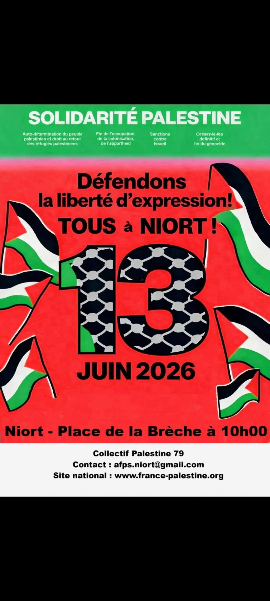
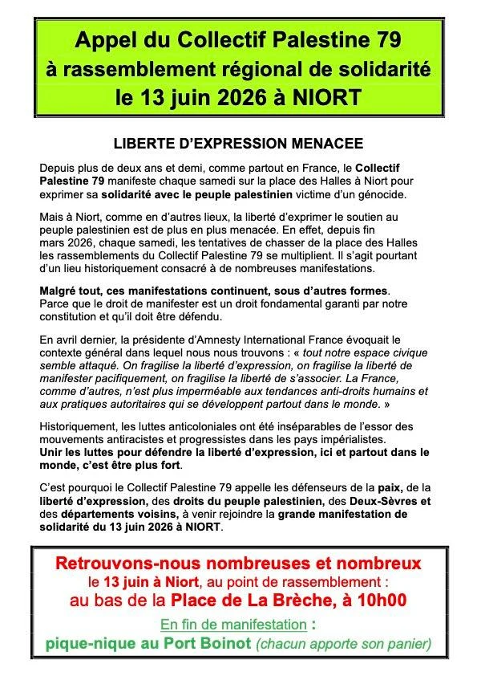

Appel archivé
« Défendons la liberté d’expression ! » L’appel du Collectif Palestine 79 à Niort
Date indiquée par Facebook · 12 juin 2026
Repères éditoriaux
Nous avons relayé l’appel du Collectif Palestine 79 à un rassemblement régional de solidarité avec le peuple palestinien. Le collectif donnait rendez-vous le samedi 13 juin 2026 à 10 h, au bas de la place de la Brèche, à Niort. Son texte annonce un pique-nique au Port Boinot après la manifestation.


Sources
Archive rouge · document diffusé sur Facebook · AR-0002-FB-00754
À lire aussi · 14 juin 2025. « Mobilisation pour la Palestine »